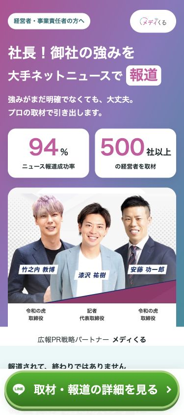
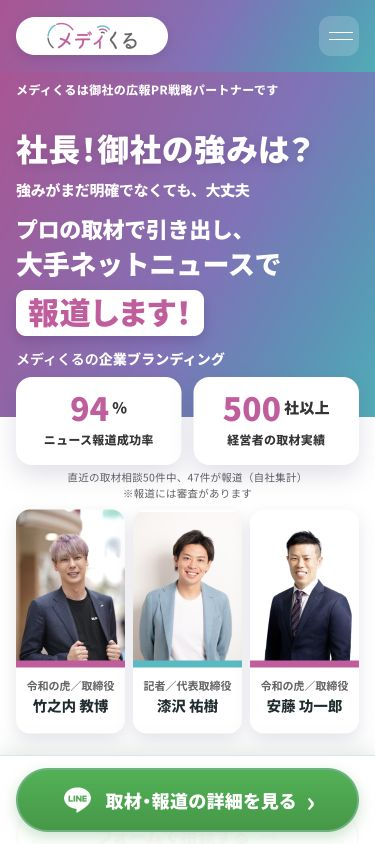
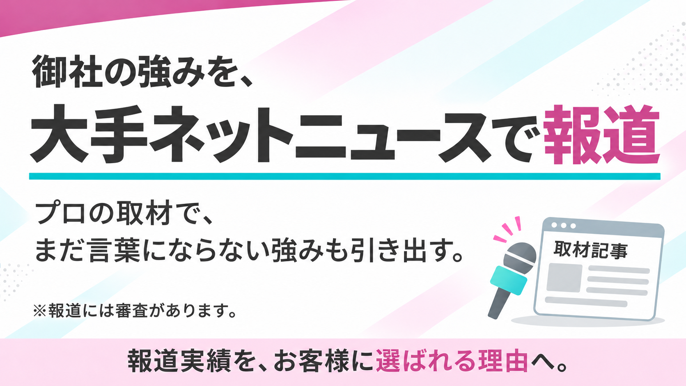

広告素材6案
静止画3案と広告動画3案。フィードと縦型の2サイズをまとめています。
広報PR戦略パートナー メディくる
説明動画、広告、Webページ、商談資料を
ひとつの一覧にまとめました。
採用版と、変更前の比較をまとめています。
採用中の説明動画と、停止中の広告素材を確認できます。


公開中のページと、変更前の比較をご確認いただけます。


原本は無料相談のA案へ更新済み。最新版のWeb確認と、変更前との比較ができます。
A案のメニューとメッセージは、管理画面で保存・再表示を確認済みです。テスト送信はしていません。

X・Instagram・TikTok・Facebookの紹介文を更新。名前と既存リンク、Facebookの詳細欄は維持しています。
